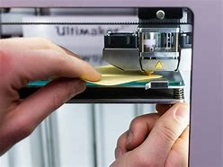
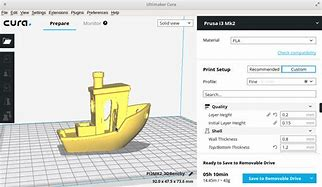

I must point out one point at the beginning.
There are many types of printers.
The article is wrong; the correct version is:
There are many types of printers, some of which do not have automatic leveling for the print bed, as shown in the picture below. In this case, the bed must be leveled manually using the screws located under the bed.
We recommend using an A4 sheet of paper between the print head and the print bed to ensure that the print head does not touch the print bed.

Timelapse Video
B: 3D Model Slicing
There are several programs that you can use to slice a 3D model. This is very important to convert the model into a language that the printer can understand. The most popular and important programs are:
Cura Slicer 
Prusa Slicer
Orca Slicer
C: 3D Printing Problems
In the future we will cover the most common issues encountered during 3D printing.
D: Problem Solutions
In the future we will explain how to troubleshoot and solve various printing issues in detail.